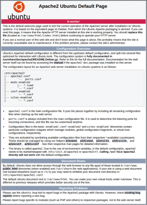

Apache
¿Qué es?
El servidor HTTP Apache es un servidor web de código abierto, para plataformas Unix (BSD, GNU/Linux, etc.), Microsoft Windows, Macintosh y otras, que implementa el protocolo HTTP.
¿Para qué se usa?
Apache es usado principalmente para enviar páginas web estáticas y dinámicas en la World Wide Web. Muchas aplicaciones web están diseñadas asumiendo como ambiente de implantación a Apache, o que utilizarán características propias de este servidor web.
Instalación y configuración
Instalar Apache en Ubuntu es un proceso sencillo que podemos conseguir usando el administrador de paquetes "apt".
En nuestro caso, vamos hacer una instalacion por defecto, ya que no necesitaremos más.
Instalación
- Ponernos como super usuarios utiliando el siguiente comando: sudo su, nos pedirá una clave, en nuestro caso será la del usuario Admin, "admin".
- Actualizar los repositorios de Ubuntu con el siguiente comando: apt-get update.
- Actualizar el sistema y las posibles actualizaciones de aplicaciones que haya con el siguiente comando: apt-get upgrade.
Para instalar el Apache tenemos que ejecutar el siguiente comando en la consola:
apt-get install apache2
Para comprobar que se ha instalado correctamente el apache.
En el navegador tendremos que poner la siguiente dirección: http://127.0.0.1 , la IP de nuestro equipo que en nuestro caso sería la siguiente: 10.9.53.105 o como ultima opcion la siguiente: http://localhost.
Nos tendría que salir la siguiente imagen si esta correctamente instalado.

Configuración
Realizaremos varias modificaciones en el archivo de configuración general de Apache para tratar de conseguir mejor rendimiento.
Para ello, ejecutaremos el siguiente comando: sudo nano /etc/apache2/apache2.conf
Ajustaremos los valores de las siguientes variables como se indica a continuación:
- Timeout 150
- MaxKeepAliveRequests 150
- KeepAliveTimeout 3
Comandos
Para reiniciar/parar/iniciar Apache podemos emplear los comandos:
- service apache2 restart
- service apache2 stop
- service apache2 start
También podemos emplear los comandos siguientes que son más informativos:
- /etc/init.d/apache2 restart
- /etc/init.d/apache2 stop
- /etc/init.d/apache2 start
Si lo que queremos es reiniciar únicamente la configuración de Apache, es suficiente ejecutar uno de los siguientes comandos:
- service apache2 reload
- /etc/init.d/apache2 reload